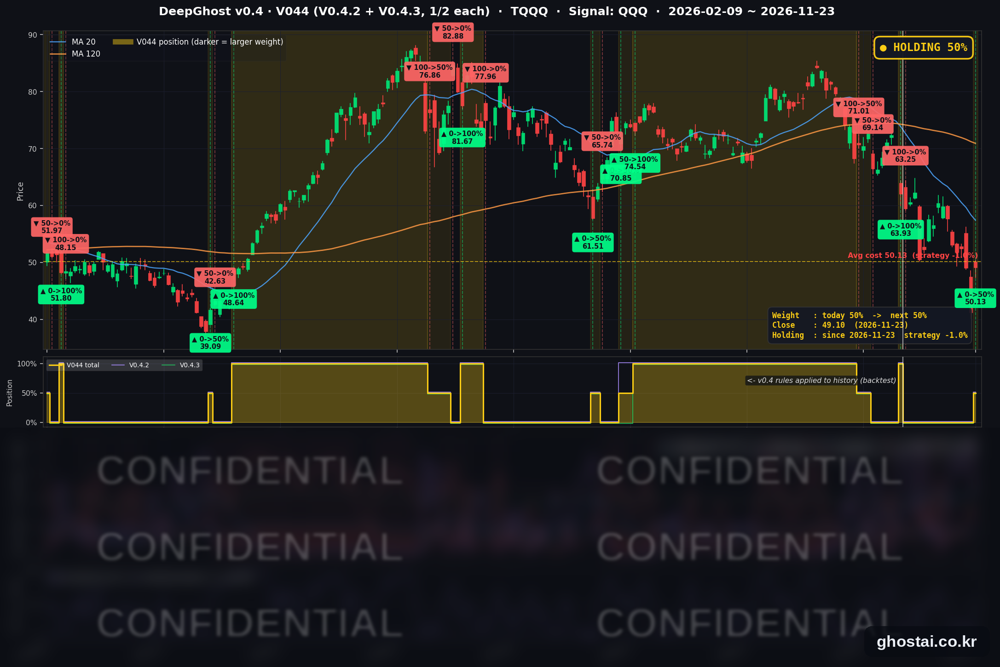

젠슨 황 복귀에 엔비디아 31% 급등·나스닥 6.5% 반등, TQQQ 비중 50% 매수 체결
· Ghost.AI 데일리 리포트
👻 매일 시그널과 히스토리를 홈페이지에서 한눈에 → www.ghostai.co.kr
회원 페이지 안내 — 회원 가입 데일리 레포트의 "오늘의 매매 신호"는 26년 12월 31일까지만 제공됩니다. 이후는 회원 페이지(무료) 에서 확인하시기 바랍니다.
엔비디아 이사회가 젠슨 황을 CEO 로 복귀시키자 엔비디아가 31.48% 올랐고, 나스닥(+6.51%)과 S&P 500(+4.73%)은 2025년 4월 9일 이후 가장 크게 올랐습니다. 다만 상승 대부분이 개장 전 시가에서 나왔고 나스닥은 시가보다 낮게 마감했으며, 주요 지수는 모두 200일선 아래입니다. 금리는 거의 움직이지 않았고 VIX 는 26 대로 내렸습니다. 전략은 11월 23일 미국 장 시가 50.135달러에 TQQQ 비중 50% 를 매수했고, 오늘은 새 신호 없이 비중 50% 를 유지합니다.
📊 오늘의 매매 신호
| 항목 | 내용 |
|---|---|
| 오늘의 신호 | 🟡 신규 신호 없음 — 전략은 TQQQ 비중 50% 보유를 유지합니다 |
| 전략 비중 | 50% → 다음 거래일 시가 50% |
| 포지션 상태 | 📈 TQQQ 일부 보유 중 (비중 50%) |
| 보유 시작일 | 2026-11-23 (1거래일째, 11월 23일 시가 매수 체결) |
| 평균 단가 → 현재가 | $50.135 → $49.10 |
| 보유 기간 전략 수익률 | -1.03% |
TQQQ 시그널 — IN POSITION (비중 50%)
현재 상태: TQQQ 일부 보유 중 (비중 50%) | 보유 기간 전략 수익률 -1.03%

전략은 11월 20일 매수 신호대로 11월 23일(월) 미국 장 시가 50.135달러에 TQQQ 비중을 0% 에서 50% 로 늘렸습니다. 11월 2일 매도 뒤 첫 매수입니다.
체결가는 월요일 시가 갭으로 정해졌습니다. TQQQ 는 금요일 종가(41.20달러)보다 21.69% 높게 출발했고, 장중 밀려 19.17% 오른 49.10달러로 마감했습니다. 하루 상승률은 2025년 4월 9일 이후 가장 크지만 종가가 체결가보다 2.06% 낮아, 비중 50% 를 반영한 보유 기간 전략 수익률은 -1.03% 입니다. 11월 2일 v0.4 공식 전환 이후 전략 수익률은 +0.95% 입니다.
홈페이지 「오늘의 시그널」은 v0.3 기준이라 오늘도 현금 보유로 표시됩니다. 이 글의 신호는 같은 AI 신호에 비중 조절을 더한 개선판 v0.4 기준이며, 자세한 화면은 회원 페이지에서 볼 수 있습니다.
오늘 미국 시장 — 시황 요약
지수 마감
| 지수 | 종가 | 등락률 | 시가 → 종가 |
|---|---|---|---|
| S&P 500 | 7,237.17 | +4.73% | +0.14% |
| 나스닥 종합 | 24,089.56 | +6.51% | -0.74% |
| 다우존스 | 49,595.31 | +3.01% | +0.72% |
| 러셀 2000 (IWM) | 265.74 | +3.56% | -0.11% |
| QQQ (나스닥100) | 651.03 | +7.00% | -0.75% |
| TQQQ | 49.10 | +19.17% | -2.06% |
나스닥·S&P 500·QQQ 의 하루 상승률은 모두 2025년 4월 9일 이후 가장 큽니다. S&P 500 은 7거래일 연속 하락을 끝냈고, 지난주(11월 13일→20일) 하락분의 절반을 하루에 되찾았습니다. 10월 6일 최고 종가(7,818.93)보다 7.44% 낮아 조정 기준(-10%) 위로 돌아왔습니다. 나스닥은 같은 날 최고 종가(27,599.79)보다 12.72% 낮습니다.
상승 대부분은 개장 전에 나왔습니다. 나스닥은 7.30% 높게 출발해 시가보다 0.74% 낮게, QQQ 는 7.81% 높게 출발해 0.75% 낮게 마감했습니다. S&P 500·나스닥·다우·IWM 모두 아직 200일 이동평균선 아래에 있습니다(S&P 500 -1.54%, 나스닥 -4.27%).
국채 금리 동향
| 만기 | 11/20 | 11/23 | 전일 대비 |
|---|---|---|---|
| 3개월 | 4.122% | 4.147% | +2.5bp |
| 2년 (재무부 기준) | 4.63% | 4.63% | 0bp |
| 5년 | 4.701% | 4.728% | +2.7bp |
| 10년 | 4.912% | 4.918% | +0.6bp |
| 30년 | 5.303% | 5.294% | -0.9bp |
주가가 크게 올랐지만 금리는 거의 그대로였습니다. 10년물은 장중 4.982% 까지 올랐다가 4.918% 로 마감해, 금요일에 14bp 내린 수준을 유지했습니다. 10년-3개월 스프레드는 77bp, 10년-2년은 29bp 로 역전은 없습니다. 오늘 반등은 금리 하락이 아니라 엔비디아 경영 불확실성이 줄어든 데서 나왔습니다.
연준 발언 & 금리 패스
- 11월 23일: 연준 위원 발언 일정이 없었습니다.
- 최근 발언: 쿡 이사(11월 20일)는 10월 PCE 물가를 전년 대비 약 3.8% 로 추정하며 "금리 인상을 더 늦추면 뒤처질 위험이 있다"고 했습니다. 무살렘 세인트루이스 연은 총재(11월 17일)는 인상을 "늦고 크게"보다 "일찍 조금씩" 하는 편이 낫다고 했습니다.
- 금리 경로: 기준금리는 3.75~4.00% 이고, 1년 이하 금리가 소폭 올라 12월 인상 기대는 그대로입니다. 다음 회의는 12월 8~9일이며, 그 전에 남은 주요 지표는 11월 25일 10월 PCE 입니다.
오늘의 핵심 이슈
- 엔비디아, 젠슨 황 CEO 복귀로 31.48% 상승. 엔비디아 이사회는 11월 12일 물러난 황을 사장·CEO·이사로 즉시 복귀시킨다고 발표했습니다. 독립이사로만 구성한 국가안보·수출통제 위원회를 새로 만들고, 진행 중인 조사는 끝까지 마치겠다고 밝혔습니다. 엔비디아는 165.05달러로 마감해 2003년 5월 이후 가장 큰 하루 상승을 기록했고 지난주 하락분을 모두 되찾았습니다. 다만 10월 6일 최고 종가보다는 31.01% 낮습니다.
- 반도체·기술주 전반 반등. S&P 500 반도체 14종목이 모두 올랐고(중간값 +10.02%), 정보기술 업종은 71종목 중 69종목이 올랐습니다. 마이크론 +19.04%, 인텔 +16.34% 이고, 서버·저장장치 종목도 크게 올랐습니다. S&P 500 구성종목 493개 중 410개가 올랐습니다.
- 필수소비재·에너지만 하락. 11월 20일 급락 때 오른 필수소비재(-0.38%)와 유가가 내린 에너지(-1.06%)는 내렸습니다. 크라우드스트라이크는 지스케일러를 439억 달러에 인수하기로 했다는 보도 뒤 8.92% 내렸습니다.
변동성 & 투자심리
VIX 는 35.89 에서 26.62 로 25.83% 내려 2025년 4월 9일 이후 가장 큰 하루 하락을 기록했습니다. 다만 11월 13일 종가(19.30)와 200일 평균(약 18.7)보다는 여전히 높습니다. 공포탐욕 지수는 17(극단적 공포)로 전일 10 에서 올랐지만 아직 극단적 공포 구간입니다(feargreedmeter.com 표시값, 참고용). 한국 코스피는 황 복귀 발표 전에 장이 끝나 3.31% 내렸습니다.
매크로 & 원자재
| 품목 | 종가 | 등락률 |
|---|---|---|
| 원유 ETF (USO) | $133.36 | -4.49% |
| WTI 선물 (참고) | $80.26 | -4.43% |
| 금 선물 | $3,635.60 | +3.42% |
| 금 ETF (GLD) | $333.02 | +3.14% |
원유는 USO 기준 11월 4일 이후 가장 크게 내렸습니다. 금 선물은 8월 5일 이후 가장 많이 올랐지만 1월 29일 최고 종가보다 31.64% 낮습니다. 11월 S&P 글로벌 PMI 예비치는 제조업 53.7, 서비스업 54.7 로 둘 다 확장 국면이지만 10월보다 낮아졌습니다(CNBC 보도).
주요 종목 동향
| 종목 | 종가 | 등락률 | 비고 |
|---|---|---|---|
| NVDA | 165.05 | +31.48% | 젠슨 황 CEO 복귀, 2003년 5월 이후 최대 하루 상승 |
| MU | 707.70 | +19.04% | 5월 26일 이후 최대 하루 상승 |
| INTC | 59.66 | +16.34% | 11월 13일 종가 수준 회복 |
| TSLA | 385.46 | +11.46% | 시가 이후에도 2.86% 더 오름 |
| QCOM | 165.38 | +10.30% | |
| META | 597.60 | +6.55% | |
| GOOGL | 282.10 | +6.34% | |
| AMZN | 255.39 | +3.47% | 시가보다 1.87% 낮게 마감 |
| AVGO | 313.55 | +3.00% | 시가보다 2.28% 낮게 마감 |
| NFLX | 58.10 | +2.41% | |
| AAPL | 349.08 | +1.90% | |
| MSFT | 492.50 | +1.65% | 4.44% 높게 출발해 시가보다 2.68% 낮게 마감 |
커버리지 12종목이 모두 올랐고, 상승 폭 상위 5종목 가운데 4종목이 반도체입니다.
다음 일정 (미 동부시간)
- 11/24(화) 뉴욕증권거래소 정상 개장, 연준 위원 발언 일정 없음
- 11/25(수) 08:30 10월 개인소득·지출(PCE), 3분기 GDP 잠정치(2차) / 14:00 베이지북
- 11/26(목) 추수감사절 휴장, 11/27(금) 13:00 조기 폐장
- 12/1(화) 10:00 10월 구인·이직(JOLTS), 12/4(금) 08:30 11월 고용보고서
- 12/8~12/9 FOMC, 12/10(목) 08:30 11월 CPI
Ghost.AI — Quantitative AI Investment
Model: DeepGhost v0.4 | Transformer-Based Deep Learning
Coverage: 14 tickers | Updated every trading day after US market close
⚠️ 본 자료는 정보 제공 목적으로만 작성되었으며 투자 권유가 아닙니다. 모든 투자의 책임은 투자자 본인에게 있습니다. 과거 성과가 미래 수익을 보장하지 않습니다.
[유의사항]
- 본 서비스는 불특정 다수를 대상으로 발행되는 단방향 정보 제공 서비스이며, 투자자 개인의 재산 상황·투자 목적·위험 선호도를 반영한 개별 투자 조언이 아닙니다.
- 고스트에이아이 주식회사는 고객과 쌍방향 의사소통(개별 상담, 맞춤형 자문 등)을 제공하지 않습니다.
- 본 콘텐츠는 투자 권유 또는 매매 주문의 청약·청약의 권유에 해당하지 않으며, 최종 투자 판단 및 그에 따른 손익의 책임은 전적으로 투자자 본인에게 있습니다.
고스트에이아이 주식회사